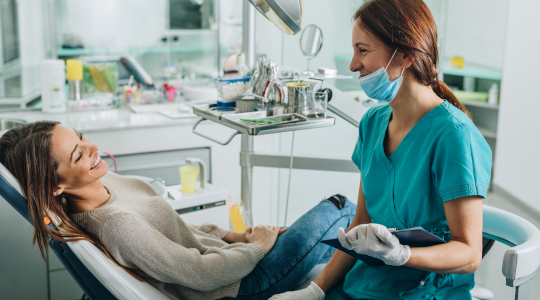

Removal Of Wisdom Teeth – Overview, Purpose And Care
by Removal Of Wisdom Teeth – Overview, Purpose And Care
Last Updated - 5 Days Ago

The removal of Wisdom teeth is an operating practice to eliminate either one or multiple wisdom teeth. If a wisdom tooth doesn't have adequate room to grow, it may result in pain, inflammation and other related problems. This is a sign informing that we need wisdom teeth removal in the quickest possible time. Signs That Indicate You Need Wisdom Teeth Removal 1. A compressed wisdom tooth may: Have an angular growth near the succeeding tooth. An angular growth at the back of the mouth. Right angular growth at the other teeth. Straight growth but being trapped in the jawbone. 2. Troubles with wisdom tooth: Having a wisdom tooth isn’t good as it typically causes the following sides: Intense Pain Gathering of food in behind the tooth Infection Gum inflammation Fluid-filled sacks around the mouth Tooth Decay Tooth Damage And other Related complications 3. Pre-& Post surgery preparations: Once you have decided for wisdom teeth removal, the best and the only option available would be to know in detail what kind of restrictions you should follow Have a discussion with the dentist to know in detail the cost it would take for the entire wisdom teeth removal process so that one may prepare accordingly. Generally, the doctors recommend the time it may need for you to be absolutely fit. So, it’s better to follow the guidelines offered by the doctor to ensure complete rest post removal of wisdom tooth. If the mode of sedation is discussed before the surgery, then make sure to follow a diet that will not complicate the surgery process. Being specific about your diet won’t hurt you. A simple soft diet otherwise is fine to go for any surgery. Drinking alcohol should be restricted immediately before and after surgery. Smoking should be restricted 8 hours before and 24 hours post-surgery. Plan a simple diet post-surgery. A kind that doesn’t require chewing or eating of too much acidic food will suit you the best after your surgery. It should be simple and easily palatable to keep up with the healing process. Any kind of severe cold or allergies should be notified to the doctors and the surgery date should be altered if required. 4. What to expect immediately after wisdom teeth removal? Well no matter how much expert a dentist is, the normal process of healing has some complications that should be kept in mind before a surgery. During the first few hours immediately after the surgery, a little pain is expected, and you cannot whine about it. But if it’s worse, you should inform the doctors so that clinical attention can be given to determine any side-effects of the surgery actions. A little bleeding or blood ooze is considered normal and should only stay overnight and anything beyond should immediately be referred for clinical attention. swelling is associated with any kind of oral surgeries and therefore right after the wisdom teeth removal procedure, there could be a little chance of swelling that should again be alright after a certain period of time. 5. Maintaining general care Brushing is permissible right after the surgery however it should be taken into consideration that any form of vigorous brushing can cause damage to the tissues inside. Warm compresses are worthwhile to warrant that the arduousness and the swelling are gone, and the healing process is made a little comfortable. The postoperative courses should be gradual, and it should give enough clinical attention to ensure that nothing is going over the board and every curative method applied is helping in the healing process of the extraction wound. Wisdom teeth removal is common and referring to a dental expert may help certainly provide the best of solutions on when to remove the teeth and how to assess the rest of the related risks. There are no precautionary measures to avoid wisdom teeth removal. Once the diagnosis is done with a wisdom tooth the best is to have it removed under expert supervision.
Leave a Comment:
Search
Advertisement